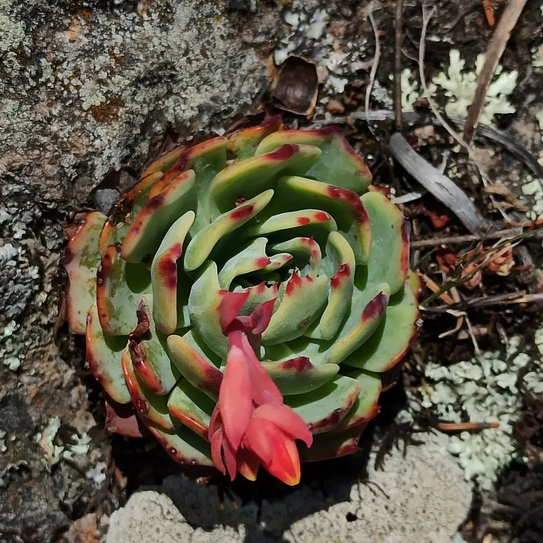

多肉植物 · 植物界
玉蝶 Echeveria secunda

景天科拟石莲花属多肉，叶片蓝绿色、覆白粉，排列成规整莲座，春季抽出花梗开黄色小花，原产墨西哥，是经典普货多肉。
- 分类
- 门被子植物门纲木兰纲目虎耳草目科景天科属拟石莲花属
- 栖息环境
- 墨西哥中部干旱山地的岩缝与草坡，喜光、耐旱
- 地理分布
- 原产墨西哥中部，世界各地广泛盆栽
- 保护级别
- 暂无评估
物种志
玉蝶为景天科拟石莲花属的多年生肉质草本，叶片匙形或倒卵形，长 3–6 厘米，先端急尖，叶面蓝绿色，表面覆一层白色蜡粉，叶缘在光照充足时泛红。叶片紧密排列成莲座状，直径可达 10–15 厘米，老株下部叶片脱落，形成短茎。花梗自叶腋抽出，花序蝎尾状，花黄色，花期春季；果实为蓇葖果。
玉蝶原产墨西哥中部的干旱山地，喜阳光充足、凉爽干燥和通风良好的环境，耐旱、怕积水，夏季高温时生长缓慢。它莲座规整、叶色清雅，容易群生形成老桩，是拟石莲花属中最常见的栽培种类之一。栽培用疏松透气的颗粒土，生长期干透浇透，夏季遮阴控水，冬季保持 5℃ 以上；繁殖以叶插和分株为主，叶片完整平放在微潮土面即可生根发芽。
形态与习性
- 冠幅莲座直径 10–15 厘米
- 叶片匙形，蓝绿色，覆白色蜡粉
- 花期春季，花黄色，蝎尾状花序
- 光照喜充足阳光，夏季适当遮阴
- 水分耐旱，干透浇透，忌积水
- 土壤疏松透气的颗粒土
- 繁殖叶插、分株为主
- 耐寒冬季需保持 5℃ 以上
趣味知识
- 玉蝶叶片表面的白粉是蜡质层，能防晒和减少水分蒸发，浇水时不要擦掉。
- 它容易从基部长出侧芽，养成群生老桩。
- 叶插时把完整叶片平放在土面，几周后就能生根发芽。